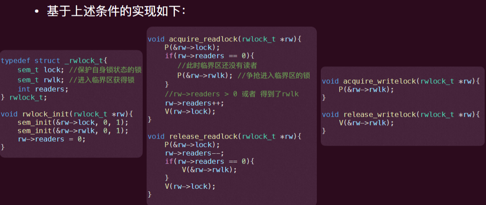
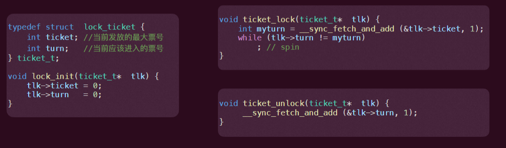
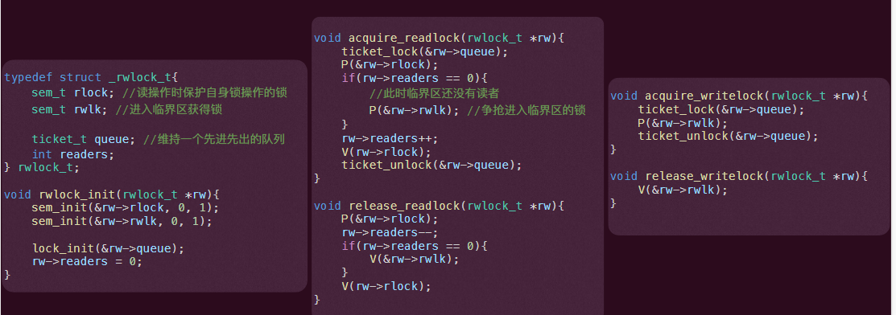
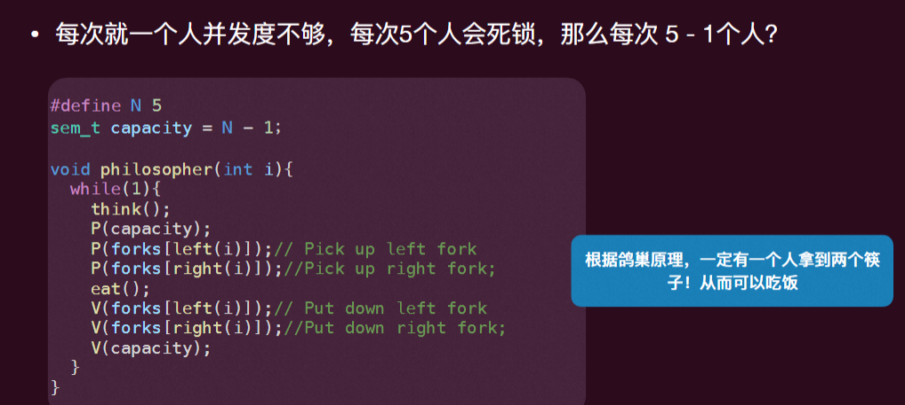
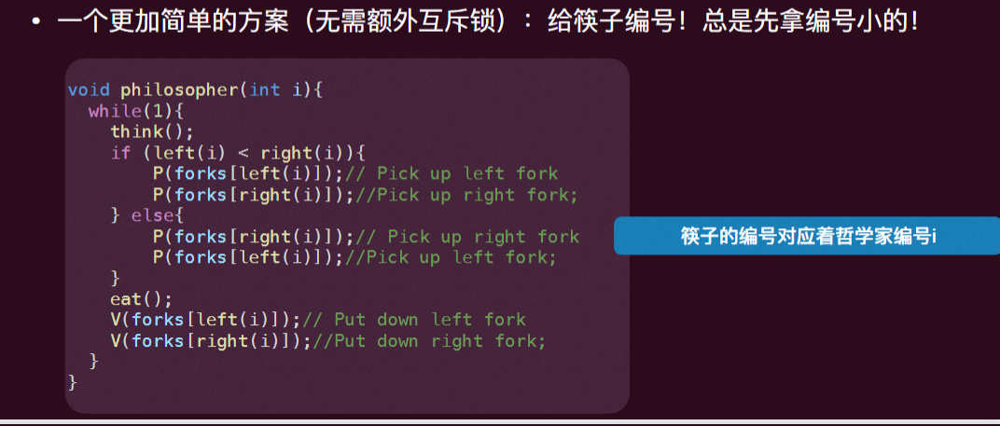

操作系统-07并发-同步(进阶)
读者-写者问题
多个线程想要读取某个数据，有⼀个或多个线程需要写某个数据
- 任何数量的读者都可以同时进行“读”操作（读-读不需要互斥）
- 但⼀次只能有⼀个写者进⾏“写”操作 （写-写互斥）
- 如果有⼀个写者在写，那么此刻没有读者（写-读互斥）
实现“读写锁”（readers/writers lock）来保护共享数据
- 其可以允许多个“读者”同时访问共享数据，只要他们中没有⼀个修改该数据
- ⼀次只能有⼀个“写者”可以持有读写锁进⼊临界区，因此可以安全的读和写数据
分别给当前读者和写者是否可以进入临界区的条件
- 对读者：如果临界区为空 or 临界区有其它读者，可进入
- 对写着：只有临界区为空才可进入
实现 1：读者优先
- 如果⼀直有读者反复进⼊临界区，那么写者就会进⼊不了临界区，从⽽饿死 (starvation)

实现 2：写者优先
- 如果有写者想要进⼊临界区，那么其应该阻⽌后来的读者尝试进⼊临界区
- 如果⼀直有写者想要进⼊临界区，那么读者就会进⼊不了临界区，从⽽饿死 (starvation)
实现 3：给线程排队
排队：ticket lock

实现

哲学家就餐问题
背景
五位哲学家围坐在⼀张圆形餐桌旁，做以下两件事情之⼀：吃饭或者思考。
每位哲学家之间各有⼀只筷⼦。哲学家必须同时得到左右⼿的筷⼦才能吃东⻄。
哲学家们怎么办才能⽐较合理的吃到饭？
- 不会死锁、没有饿死、并发度⾼？
死锁和饿死
- 死锁 (Deadlock) 和饿死 (starvation) 都关乎活性 (liveness) — 死锁和饿死并没有违背安全性
- 饿死即为⼀个线程在有限时间内⽆法⾏进
- 死锁是⼀类特殊的“饿死”，其达成的条件是多个线程形成⼀个等待环，⼀个线程的⾏进需要环内的另外⼀个线程做某个动作：显然环状意味着这个等待条件永远⽆法发⽣
- 死锁⼀定饿死，饿死并不⼀定死锁（⽐如运⽓不好，⼀直被其他线程抢占临界区）


总结
- 除了互斥这种简单的控制外，我们还需要控制线程的顺序、相对关系等
- 条件变量可以帮助实现适⽤于任何同步条件（注意使⽤⽅法，需要配合互斥锁）
- 基于 wait、signal 原语可以实现算法的并发
- 信号量是更加容易使⽤的同步⼯具
- 其具有状态记忆，可以看成初始资源
- 同步经典问题：⽣产者-消费者问题、读者-写者问题（公平性问题）、哲学家进餐问题 （死锁、饿死问题）
操作系统-07并发-同步(进阶)
https://astronautbase.github.io/2025/08/25/操作系统-07并发-同步-进阶/